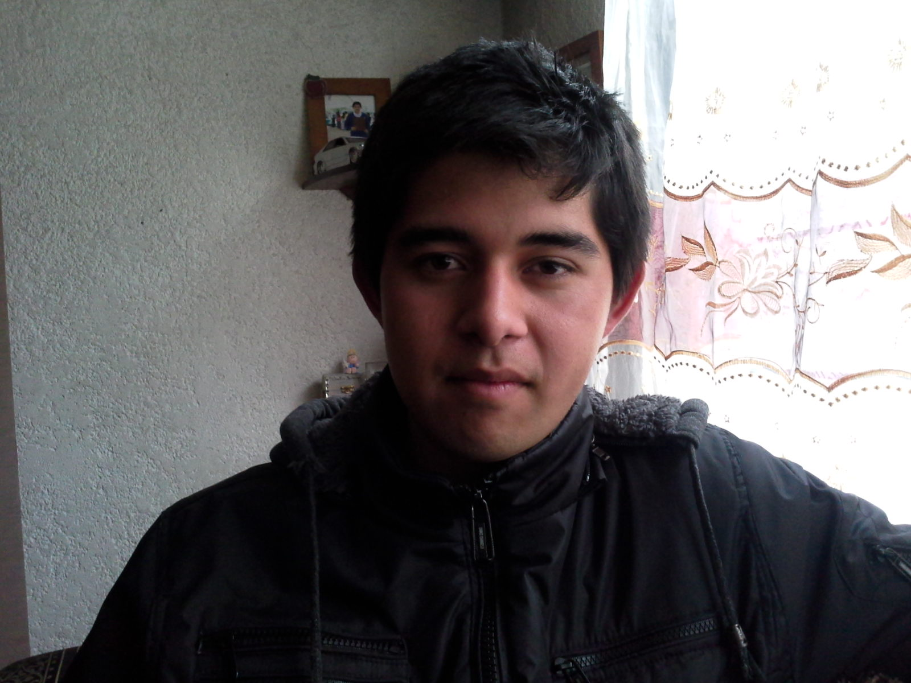

Sobre mí

Mi nombre es Alan Enrique García Vega, nací el 8 de agosto de 1994 en el Estado de México.
Cuento con el título de técnico programador, actualmente acabo de terminar el primer año de universidad en la cual estoy cursando la carrera de Ingeniería en Sistemas Computacionales.
Aficionado a la programación en diferentes lenguajes, gusto por el desarrollo web siempre en constante aprendizaje.
Proactivo para poder lograr mis objetivos.
Cuento con un canal en Youtube donde comparto mís conocimientos teniendo en cuenta que no toda la gente puede cursar una carrera universitaria intento expandir el conocimiento con calidad.